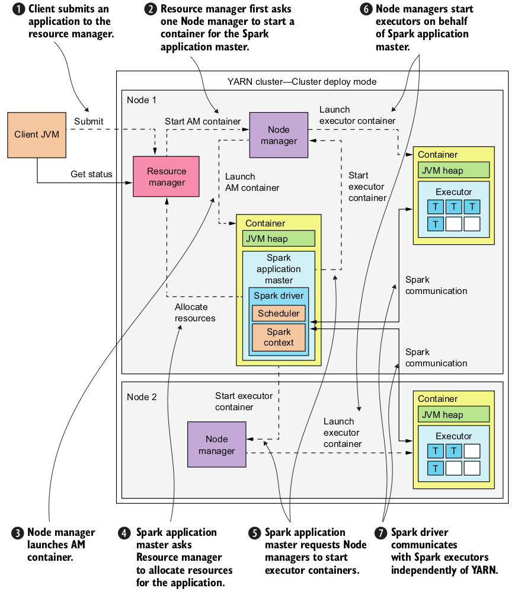

Hadoop
The following guide explains how to provision a Multi Node Hadoop Cluster locally and play with it. Checkout the Vagrantfile and the Vagrant guide for more details.
Resources
-
Hadoop: The Definitive Guide (2015)(4th) by Tom White (Book)
Setup
Requirements
Directory structure
tree -a hadoop/
hadoop/
├── .data # mounted volume
│ ├── hadoop_rsa
│ ├── hadoop_rsa.pub
│ ├── master
│ │ ├── hadoop
│ │ │ ├── log
│ │ │ │ ├── hadoop
│ │ │ │ ├── mapred
│ │ │ │ └── yarn
│ │ │ ├── namenode
│ │ │ └── secondary
│ │ ├── oozie
│ │ │ ├── data
│ │ │ └── log
│ │ ├── spark
│ │ │ └── log
│ │ └── zeppelin
│ │ ├── log
│ │ └── notebook
│ ├── node-1
│ │ └── hadoop
│ │ ├── datanode
│ │ └── log
│ │ ├── hadoop
│ │ ├── mapred
│ │ └── yarn
│ ├── node-2
│ ├── node-3
├── example
│ ├── map-reduce
│ └── spark
├── file
│ ├── hadoop
│ │ ├── config
│ │ │ ├── core-site.xml
│ │ │ ├── fair-scheduler.xml
│ │ │ ├── hdfs-site.xml
│ │ │ ├── mapred-site.xml
│ │ │ ├── masters
│ │ │ ├── slaves
│ │ │ └── yarn-site.xml
│ │ └── profile-hadoop.sh
│ ├── hosts
│ ├── motd
│ ├── oozie
│ │ ├── config
│ │ │ ├── oozie-env.sh
│ │ │ └── oozie-site.xml
│ │ └── profile-oozie.sh
│ ├── spark
│ │ ├── config
│ │ │ ├── log4j.properties
│ │ │ └── spark-env.sh
│ │ └── profile-spark.sh
│ ├── ssh
│ │ └── config
│ └── zeppelin
│ ├── config
│ │ └── zeppelin-env.sh
│ └── profile-zeppelin.sh
├── script
│ ├── bootstrap.sh
│ ├── setup_hadoop.sh
│ ├── setup_oozie.sh
│ ├── setup_spark.sh
│ ├── setup_ubuntu.sh
│ └── setup_zeppelin.sh
├── Vagrantfile
└── vagrant_hadoop.sh
Import the script
source vagrant_hadoop.sh
Create and start a Multi Node Hadoop Cluster
hadoop-start
The first time it might take a while
Access the cluster via ssh, check also the /etc/hosts file
vagrant ssh master
ssh hadoop@172.16.0.10 -i .data/hadoop_rsa
# 3 nodes
vagrant ssh node-1
ssh hadoop@172.16.0.101 -i .data/hadoop_rsa
Destroy the cluster
hadoop-destroy
For convenience add to the host machine
cat hadoop/file/hosts | sudo tee --append /etc/hosts
Web UI links
- NameNode: http://namenode.local:50070
- NameNode metrics: http://namenode.local:50070/jmx
- ResourceManager: http://resource-manager.local:8088
- Log Level: http://resource-manager.local:8088/logLevel
- Web Application Proxy Server: http://web-proxy.local:8100/proxy/application_XXX_0000
- MapReduce Job History Server: http://history.local:19888
- DataNode/NodeManager (1): http://node-1.local:8042/node
- DataNode/NodeManager (2): http://node-2.local:8042/node
- DataNode/NodeManager (3): http://node-3.local:8042/node
- Spark: http://spark.local:4040
- Spark History Server: http://spark-history.local:18080
- Zeppelin (*): http://zeppelin.local:8080
- Oozie (*): http://oozie.local:11000
(*) Not installed by default
HDFS and MapReduce
HDFS is a distributed file system that provides high-throughput access to application data
YARN is a framework for job scheduling and cluster resource management
MapReduce is a YARN-based system for parallel processing of large data sets
Documentation
Admin
HDFS cli
# help
hdfs
# filesystem statistics
hdfs dfsadmin -report
# filesystem check
hdfs fsck /
YARN cli
# help
yarn
# list yarn applications
yarn application -list
# list nodes
yarn node -list
# view application logs
yarn logs -applicationId APPLICATION_ID
# kill yarn application
yarn application -kill APPLICATION_ID
Useful paths
# data and logs
devops/hadoop/.data/master/hadoop # host
/vol/hadoop # guest
# (guest) config
/usr/local/hadoop/etc/hadoop
# (hdfs) map-reduce history
/mr-history/history/done_intermediate/hadoop
# (hdfs) aggregated app logs
/yarn/app/hadoop/logs/application_XXX
MapReduce WordCount Job
# build jar on the host machine
cd devops/hadoop/example/map-reduce
./gradlew clean build
cd devops/hadoop
vagrant ssh master
# create base directory using hdfs
hdfs dfs -mkdir -p /user/ubuntu
# create example directory
hadoop fs -mkdir -p /user/ubuntu/word-count/input
# list directory
hadoop fs -ls -h -R /
hadoop fs -ls -h -R /user/ubuntu
# create sample files
echo "Hello World Bye World" > file01
echo "Hello Hadoop Goodbye Hadoop" > file02
# copy from local to hdfs
hadoop fs -copyFromLocal file01 /user/ubuntu/word-count/input
hadoop fs -put file02 /user/ubuntu/word-count/input
# verify copied files
hadoop fs -ls -h -R /user/ubuntu
hadoop fs -cat /user/ubuntu/word-count/input/file01
hadoop fs -cat /user/ubuntu/word-count/input/file02
hadoop fs -cat /user/ubuntu/word-count/input/*
# run application
hadoop jar /vagrant/example/map-reduce/build/libs/map-reduce.jar \
/user/ubuntu/word-count/input \
/user/ubuntu/word-count/output
# check output
hadoop fs -cat /user/ubuntu/word-count/output/part-r-00000
# delete directory to run it again
hadoop fs -rm -R /user/ubuntu/word-count/output
# run sample job in a different queue
hadoop jar \
$HADOOP_HOME/share/hadoop/mapreduce/hadoop-mapreduce-examples-*.jar \
wordcount \
-Dmapreduce.job.queuename=root.priority_queue \
/user/ubuntu/word-count/input \
/user/ubuntu/word-count/output
# well known WARN issue
# https://issues.apache.org/jira/browse/HDFS-10429
Benchmarking MapReduce with TeraSort
# generate random data
hadoop jar \
$HADOOP_HOME/share/hadoop/mapreduce/hadoop-mapreduce-examples-*.jar \
teragen 1000 random-data
# run terasort benchmark
hadoop jar \
$HADOOP_HOME/share/hadoop/mapreduce/hadoop-mapreduce-examples-*.jar \
terasort random-data sorted-data
# validate data
hadoop jar \
$HADOOP_HOME/share/hadoop/mapreduce/hadoop-mapreduce-examples-*.jar \
teravalidate sorted-data report
# useful commands
hadoop fs -ls -h -R .
hadoop fs -rm -r random-data
hadoop fs -cat random-data/part-m-00000
hadoop fs -cat sorted-data/part-r-00000
Spark
Spark is an open-source cluster-computing framework
Resources
-
Spark in Action (2016) by Petar Zečević and Marko Bonaći (Book)
-
Understanding Resource Allocation configurations for a Spark application
Spark application on YARN

# start REPL
spark-shell
pyspark
Interactive Analysis example
spark-shell
# spark shell with yarn
spark-shell --master yarn --deploy-mode client
# view all configured parameters
sc.getConf.getAll.foreach(x => println(s"${x._1}: ${x._2}"))
val licenceLines = sc.textFile("file:/usr/local/spark/LICENSE")
val lineCount = licenceLines.count
val isBsd = (line: String) => line.contains("BSD")
val bsdLines = licenceLines.filter(isBsd)
bsdLines.count
bsdLines.foreach(println)
Spark Job examples
Example local
# run SparkPi example
spark-submit \
--class org.apache.spark.examples.SparkPi \
--master local[*] \
$SPARK_HOME/examples/jars/spark-examples_*.jar 10
# GitHub event documentation
# https://developer.github.com/v3/activity/events/types
# build jar on the host machine
cd devops/hadoop/example/spark
sbt clean package
cd devops/hadoop
vagrant ssh master
# sample dataset
mkdir -p github-archive && \
cd $_ && \
wget http://data.githubarchive.org/2018-01-01-{0..10}.json.gz && \
gunzip -k *
# sample line
head -n 1 2018-01-01-0.json | jq '.'
# run local job
spark-submit \
--class "com.github.niqdev.App" \
--master local[*] \
/vagrant/example/spark/target/scala-2.11/spark-github_2.11-0.1.0-SNAPSHOT.jar
Example cluster
# run job in YARN cluster-deploy mode
spark-submit \
--class org.apache.spark.examples.SparkPi \
--master yarn \
--deploy-mode cluster \
--driver-memory 2g \
--executor-memory 1g \
--executor-cores 3 \
--queue default \
$SPARK_HOME/examples/jars/spark-examples*.jar \
10
# --conf "spark.yarn.jars=hdfs://namenode.local:9000/user/spark/share/lib/*.jar"
Zeppelin
Zeppelin is a web-based notebook that enables data-driven, interactive data analytics and collaborative documents with SQL, Scala and more
Resources
Setup
Install and start Zeppelin
# access master node
vagrant ssh master
# login as root
sudo su -
# install and init
/vagrant/script/setup_zeppelin.sh
# start manually (first time only)
su --login hadoop /vagrant/script/bootstrap.sh zeppelin
Examples
# markdown interpreter
%md
hello
# shell interpreter
%sh
hadoop fs -ls -h -R /
Cluster issue: verify to have enough memory with free -m e.g. Error: Cannot allocate memory
Oozie
Oozie is a workflow scheduler system to manage Hadoop jobs
Resources
Setup
Optional PostgreSQL configuration - By default Oozie is configured to use Embedded Derby
# access master node
vagrant ssh master
# install docker
curl -fsSL get.docker.com -o get-docker.sh && \
chmod u+x $_ && \
./$_ && \
sudo usermod -aG docker hadoop
# logout and login again to verify docker installation
exit
vagrant ssh master
whoami # hadoop
docker ps -a
# uncomment PostgreSQL configurations
vim devops/hadoop/file/oozie/config/oozie-site.xml # from host
vim /vagrant/file/oozie/config/oozie-site.xml # from guest
# start postgres on guest machine
docker run \
--detach \
--name oozie-postgres \
-p 5432:5432 \
-e POSTGRES_DB="oozie-db" \
-e POSTGRES_USER="postgres" \
-e POSTGRES_PASSWORD="password" \
postgres
# permission issue
# https://github.com/docker-library/postgres/issues/116
# --volume /vol/postgres:/var/lib/postgresql/data
# access container
docker exec -it oozie-postgres bash
psql --username=postgres
# list all databases
\list
\connect oozie-db
# list all tables
\dt
# describe table
\d+ wf_jobs
# list workflow
select * from wf_jobs;
Install and start Oozie
# access master node
vagrant ssh master
# login as root
sudo su -
# build, install and init
/vagrant/script/setup_oozie.sh
# start oozie manually (first time only)
su --login hadoop /vagrant/script/bootstrap.sh oozie
It might take a while to build the sources
Useful paths
# data and logs
devops/hadoop/.data/master/oozie # host
/vol/oozie # guest
# (guest) config
/usr/local/oozie/conf
# (hdfs) examples
/user/hadoop/examples
Examples
Run bundled examples within distribution
# examples path
.data/master/oozie/examples # host
/vol/oozie/examples # guest
# access master node as hadoop user
vagrant ssh master
export OOZIE_EXAMPLE_PATH=/vol/oozie/examples
export OOZIE_HDFS_PATH=/user/$(whoami)/examples
# open map-reduce job.properties
vim $OOZIE_EXAMPLE_PATH/apps/map-reduce/job.properties
# edit the following properties
nameNode=hdfs://namenode.local:9000 # fs.defaultFS @ core-site.xml
jobTracker=resource-manager.local:8032 # yarn.resourcemanager.address @ yarn-site.xml
queueName=priority_queue # or default @ fair-scheduler.xml
# upload all the examples
hadoop fs -put $OOZIE_EXAMPLE_PATH $OOZIE_HDFS_PATH
# verify uploaded files
hadoop fs -ls -h -R /user/$(whoami)
# run the map-reduce workflow example
oozie job \
-oozie http://oozie.local:11000/oozie \
-config $OOZIE_EXAMPLE_PATH/apps/map-reduce/job.properties \
-run
# verify status
oozie job -oozie http://oozie.local:11000/oozie -info WORKFLOW_ID
# verify result
hadoop fs -cat $OOZIE_HDFS_PATH/output-data/map-reduce/part-00000
# remove all the examples
hadoop fs -rm -R $OOZIE_HDFS_PATH
Useful commands
- Workflow requires
oozie.wf.application.pathproperty - Coordinator requires
oozie.coord.application.pathproperty
# verify oozie status
oozie admin \
-oozie http://oozie.local:11000/oozie \
-status
# verify workflow or coordinator status
oozie job \
-oozie http://oozie.local:11000/oozie \
-info JOB_ID \
-verbose
# poll workflow or coordinator status
oozie job \
-oozie http://oozie.local:11000/oozie \
-poll JOB_ID \
-interval 10 \
-timeout 60 \
-verbose
# find running coordinator
oozie jobs \
-oozie http://oozie.local:11000/oozie/ \
-filter status=RUNNING \
-jobtype coordinator
# suspend|resume|kill coordinator
oozie job \
-oozie http://oozie.local:11000/oozie/ \
[-suspend|-resume|-kill] \
XXX-C
# re-run coordinator's workflow (action)
oozie job \
-oozie http://oozie.local:11000/oozie/ \
-rerun XXX-C \
-action 1,2,3,N
# kill workflow
oozie job \
-oozie http://oozie.local:11000/oozie/ \
-kill \
XXX-W
# re-run all workflow's actions
oozie job \
-oozie http://oozie.local:11000/oozie/ \
-rerun \
XXX-W \
-Doozie.wf.rerun.failnodes=false